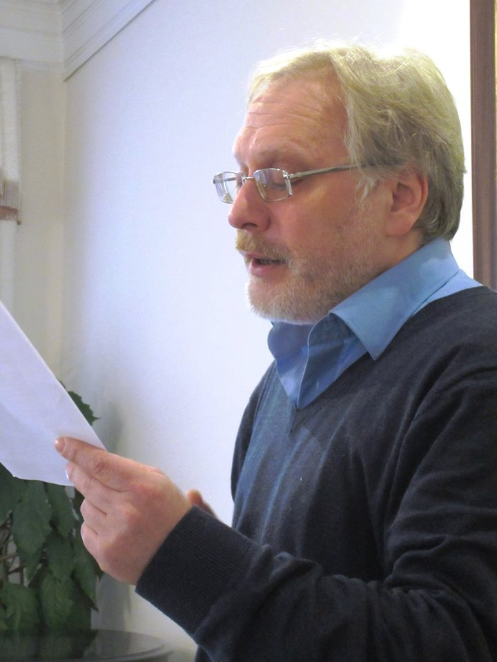

<!DOCTYPE html>
<html lang="en">
<head>
    <meta charset="UTF-8">
    <meta http-equiv="X-UA-Compatible" content="IE=edge">
    <meta name="viewport" content="width=device-width, initial-scale=1.0">

    <title>rggu</title>


<head>
    
    <script src="https://aframe.io/releases/1.5.0/aframe.min.js"></script>
    <script src="https://unpkg.com/aframe-environment-component@1.2.0/dist/aframe-environment-component.min.js"></script>
    <script src="https://unpkg.com/aframe-text-geometry-component@^0.5.0/dist/aframe-text-geometry-component.min.js"></script> 
<head>

<a-assets>

  <a-asset-item id="optimerBoldFont" src="./russianfont.json"></a-asset-item> 
   
</a-assets>


  <body>
    <a-scene>
      
      <a-sky  src= "rggu.JPG"></a-sky>

      <a-entity text-geometry="value: мой    любимый    преподаватель ; font: #optimerBoldFont ; size:4;  height: 4; bevelEnabled: true; bevelSize: 0.04; bevelThickness: 0.04; curveSegments: 1"  position="-42.610 13.174 -56.813" material=" color:  #5665d7;"  ></a-entity> 
      <a-entity text-geometry="value: Михаил   Павлович   Одесский ; font: #optimerBoldFont ; size:4;  height: 4; bevelEnabled: true; bevelSize: 0.04; bevelThickness: 0.04; curveSegments: 1"  position="-43.613 4.444 -56.813" material=" color:  #5665d7;"  ></a-entity> 
      <a-torus-knot color="#2a897e" arc="180" p="2" q="7" radius="5" radius-tubular="0.1" position="-62.277 11.016 -12.262" rotation="0 90 0"></a-torus-knot>
      <a-torus-knot color="#2a897e" arc="180" p="2" q="7" radius="5" radius-tubular="0.1" position="-62.277 11.016 3.696" rotation="0 90 0"></a-torus-knot>
      <a-torus-knot color="#2a897e" arc="180" p="2" q="7" radius="5" radius-tubular="0.1" position="-62.277 11.016 -28.235" rotation="0 90 0"></a-torus-knot>

      <a-torus-knot color="#2a897e" arc="180" p="2" q="7" radius="5" radius-tubular="0.1" position="-62.277 28.784 -12.262" rotation="0 90 0"></a-torus-knot>
      <a-torus-knot color="#2a897e" arc="180" p="2" q="7" radius="5" radius-tubular="0.1" position="-62.277 28.784 3.696" rotation="0 90 0"></a-torus-knot>
      <a-torus-knot color="#2a897e" arc="180" p="2" q="7" radius="5" radius-tubular="0.1" position="-62.277 28.784 -28.235" rotation="0 90 0"></a-torus-knot>

      <a-torus-knot color="#2a897e" arc="180" p="2" q="7" radius="5" radius-tubular="0.1" position="-62.277 47.730 -12.262" rotation="0 90 0"></a-torus-knot>
      <a-torus-knot color="#2a897e" arc="180" p="2" q="7" radius="5" radius-tubular="0.1" position="-62.277 47.730 3.696" rotation="0 90 0"></a-torus-knot>
      <a-torus-knot color="#2a897e" arc="180" p="2" q="7" radius="5" radius-tubular="0.1" position="-62.277 47.730 -28.235" rotation="0 90 0"></a-torus-knot>

      <a-sphere position="35.873 15.999 9.086" radius="5.25" color="#57cb99"></a-sphere>

      <a-image src= "#Odessky" material="side: double; alphatest: 0.5s" scale= "20 20 20" position="-1.439 5.012 22.899" rotation= "0.00  0.00  0.00"></a-image>


    </a-scene>
 
</body>
</html>